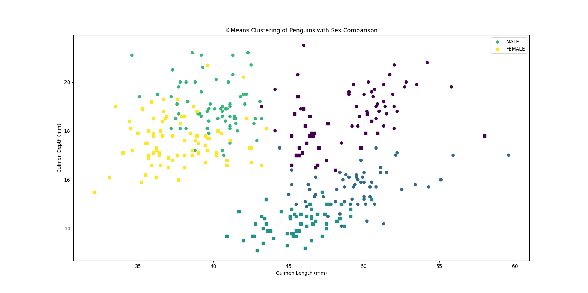

Introduction
Clustering is a machine learning technique that involves grouping similar data points together based on certain features or characteristics, aiming to identify inherent patterns and structures within a dataset. By grouping similar data points together, clustering algorithms help uncover natural divisions in the data, making it easier to understand and analyze complex relationships. Clustering plays a crucial role in tasks such as customer segmentation, anomaly detection, and image segmentation.
Imports
First, we set up our necessary imports:
import pandas as pd
import matplotlib.pyplot as plt
from sklearn.cluster import KMeans
from sklearn.preprocessing import StandardScalerDataset
In this section, we will use the “Clustering Penguins Species” dataset from Kaggle.com (https://www.kaggle.com/datasets/youssefaboelwafa/clustering-penguins-species). The dataset quantifies a number of penguin features such as culmen length (mm), culmen depth (mm), flipper length (mm), and body mass (g). The dataset also includes the sex of each penguin. For those unaware, a culmen is essentially what we would think of as the beak on a penguin.
Loading and Preprocessing Linear Regression Dataset
We load the dataset into a pandas dataframe and then scale the penguin features and create an easier mapping of male and female with the following code:
data.dropna(inplace=True)
data['sex'] = data['sex'].map({'MALE': 0, 'FEMALE': 1})
scaler = StandardScaler()
scaled_data = scaler.fit_transform(data.drop(['sex'], axis=1))K-Means Clustering
Now we can apply K-means clustering so we can see how these features cluster together
k = 4
kmeans = KMeans(n_clusters=k, init='k-means++', random_state=20)
data['cluster'] = kmeans.fit_predict(scaled_data)Here, k is the number of clusters that the algorithm will try to identify in the dataset. In this case, the algorithm is configured to find 4 clusters. Random State is essentially the seed of the algorithm and the init function is a method to speed up convergence of the algorithm.
Results
We can see the resulting clusters with the following code:
fig, ax = plt.subplots()
ax.scatter(data[data['sex'] == 0]['culmen_length_mm'], data[data['sex'] == 0]['culmen_depth_mm'],
c=data[data['sex'] == 0]['cluster'], cmap='viridis', marker='o', label='MALE')
ax.scatter(data[data['sex'] == 1]['culmen_length_mm'], data[data['sex'] == 1]['culmen_depth_mm'],
c=data[data['sex'] == 1]['cluster'], cmap='viridis', marker='s', label='FEMALE')
ax.set_title('K-Means Clustering of Penguins with Sex Comparison')
ax.set_xlabel('Culmen Length (mm)')
ax.set_ylabel('Culmen Depth (mm)')
ax.legend()
plt.show()This gives us:

These results clearly distinguish penguin features by sex and seperate them into appropriate clusters by sex and difference in said features. The yellow cluster primarily consists of males, who appear to tend to have smaller culmen length and culment depth compared to the females in the green clusters nearby. We can assume that these penguins are perhaps comparable by species or age.
We can see that this remains true for a different species or age group as well. The light blue cluster again is primarily composed of males with smaller culmen depth and culmen length compared to the again nearby female counterparts. We again can perhaps deduce these penguins are near in size or age irrespective of sex.
Finally we have one more cluster showing outiers of the same principle.